演出與聆聽方式
孫旻秀演出巴哈《平均律鍵盤曲集》第一冊全本，BWV 846–869。每組由前奏曲與賦格構成：先聽前奏曲如何建立音響與節奏，再記住賦格最初的主題，追蹤它在不同聲部的進入與交疊。
頁面中的插畫不是曲目的固定註解，而是隨著演出順序出現的視覺停頓：讓耳朵在調性、織體與節奏之外，多一個可以停駐的畫面。
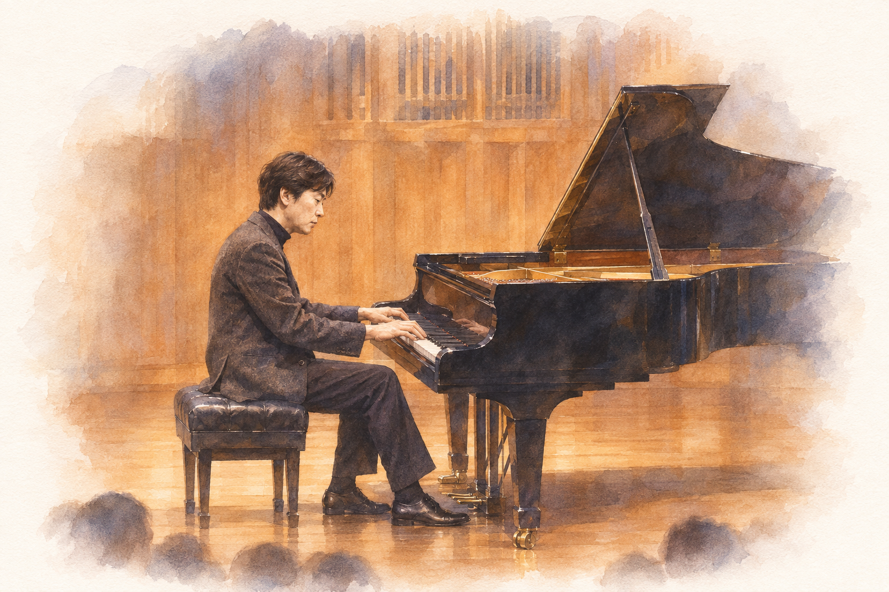
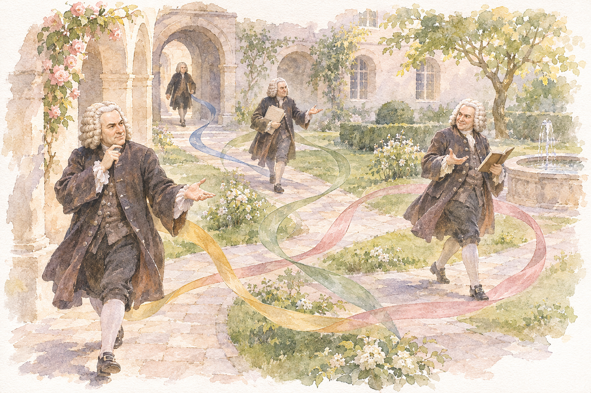
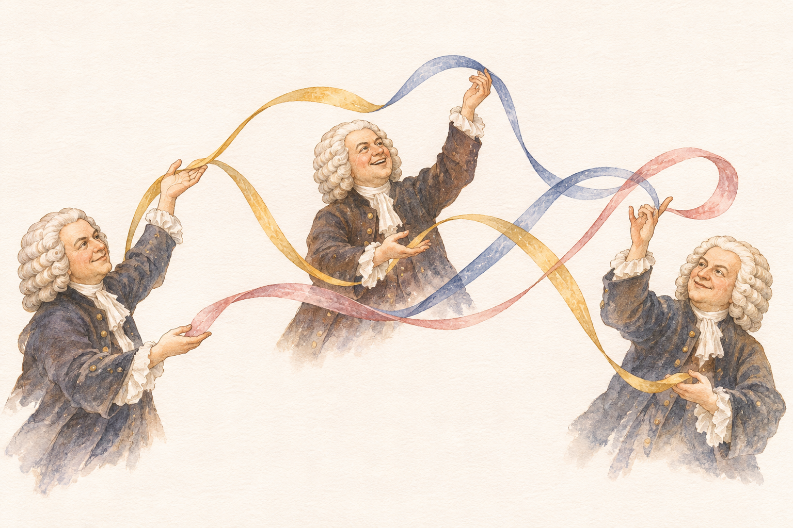
上半場：第 1–4 組
分解和弦與四聲部賦格。前奏曲以規律的分解和弦展開，音型持續反覆，和聲則隨低音與內聲部的移動而改變。賦格由單一聲部開始，其他聲部先後奏出主題，與前奏曲形成不同的織體。
聆聽重點：前奏曲可聽低音變化；賦格則先辨認開頭的主題，再聽它在不同音域出現。
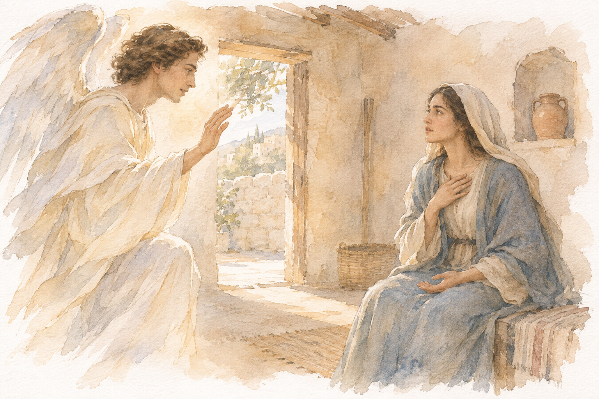
連續音型與短主題。前奏曲以快速、連續的音型推進，尾段的速度與織體有所轉變。賦格的主題短而鮮明，容易從節奏辨認它在各聲部的進入。
聆聽重點：比較前奏曲尾段與開頭的速度感，再留意賦格主題每次進入時，其他聲部正在演奏什麼。
快速音型與樂句。前奏曲的音型在兩手之間交替，連續的音符仍有清楚的樂句起伏。賦格同樣輕快，主題在不同聲部間接續出現。
聆聽重點：聽快速音型如何分成較長的樂句，以及每句結束時的停頓與收尾。
五聲部賦格。前奏曲以較長的旋律線條展開。賦格從簡短、緩慢的主題開始，後來加入較活躍的材料；不同材料逐漸交疊，使音樂愈加密集。
聆聽重點：記住賦格最初的主題，聽它如何與後來加入的旋律同時進行。
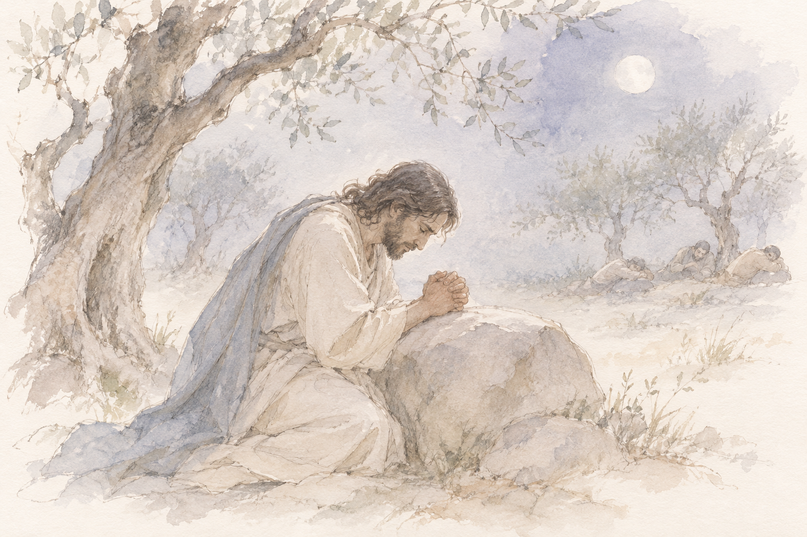
第 5–8 組
連續音流與附點節奏。前奏曲右手持續演奏快速音型，左手以較簡潔的音符支持和聲。賦格的附點節奏與和弦性寫法，帶來較莊重的性格。
聆聽重點：比較前奏曲連續流動的音型，與賦格較有重量的節奏。
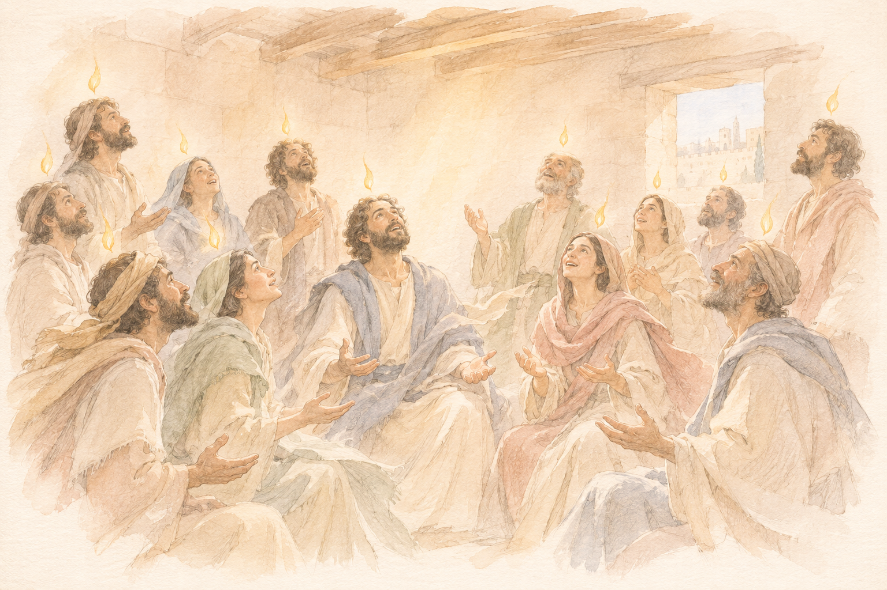
快速音型與低音。前奏曲右手的連續音型形成持續的動勢，低音的移動則帶出和聲變化。賦格中，主題與相關片段在不同聲部出現，使旋律彼此銜接。
聆聽重點：右手快速行進時，也可留意左手低音何時移動，以及樂句在哪裡結束。
前奏曲的段落與對位。這首前奏曲篇幅較大，內部包含不同速度感與織體的段落，也有明顯的模仿與對位。後面的賦格較為精煉，性格也較輕巧。
聆聽重點：留意前奏曲如何從一個段落轉入下一個段落，以及旋律在不同聲部間的模仿。
歌唱性旋律與聲部交疊。前奏曲採降 E 小調，賦格寫作升 D 小調，兩者在現代鋼琴上同音異名。前奏曲的旋律有較長的延續與停留；賦格則透過主題的反覆進入與交疊展開。
聆聽重點：前奏曲可聽旋律延續時下方和聲的改變；賦格則留意前一次主題尚未結束，下一次便已開始的位置。
第 9–12 組
搖曳的節奏。前奏曲的節奏柔和，旋律在規律的律動中延續。賦格篇幅較短，主題的節奏較為緊湊，與前奏曲形成對比。
聆聽重點：比較兩首的節奏性格，以及前奏曲旋律下方持續活動的聲部。
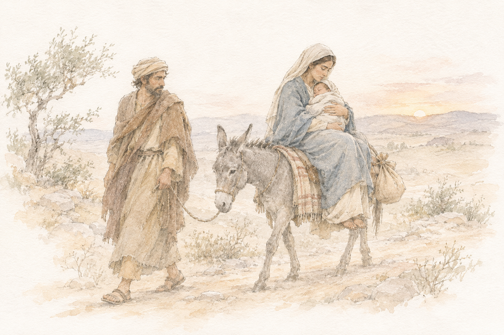
二聲部賦格。前奏曲中，歌唱性的旋律與持續音型同時進行，後段轉為更快速的段落。賦格只有兩個聲部，兩條旋律的模仿與交替因而較容易辨認。
聆聽重點：在賦格中，先追蹤上方旋律，再重聽一次，只注意下方旋律。
裝飾音與舞曲節奏。前奏曲以裝飾音與連續音型交織。賦格的三拍子節奏較為鮮明，主題在聲部間接續，保有輕盈的律動。
聆聽重點：聽前奏曲的裝飾音如何接入樂句，以及賦格每小節的輕重。
半音與和聲。前奏曲在穩定的脈動中，讓不同旋律線條彼此交織。賦格主題的半音移動帶來較強的和聲張力。這一組結束後，是臺北場的中場休息。
聆聽重點：留意賦格主題中的半音移動，以及其他聲部加入後，和聲如何改變。
下半場：第 13–16 組
旋律與節奏的擺動。下半場由升 F 大調開始。前奏曲的旋律帶有柔和的擺動感。賦格中，各聲部接續主題，也在主題之外延展自己的旋律。
聆聽重點：除了最高聲部，也可留意低音與中間聲部如何接續樂句。
兩手之間的模仿。前奏曲的材料在兩手之間交替出現，一個聲部提出的音型，會由另一聲部接續。賦格則以較長的主題展開多聲部寫作。
聆聽重點：聽前奏曲中的相似音型如何由一手轉到另一手，以及接續時的音域變化。
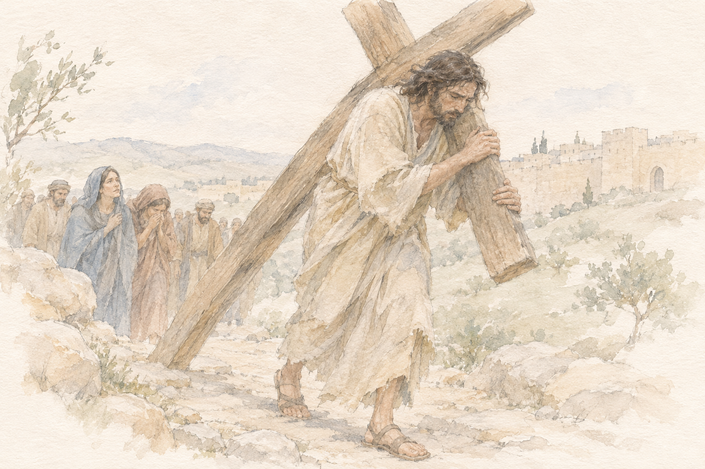
舞曲節奏與主題倒影。前奏曲與賦格都有鮮明的動感。賦格主題除了以原來的形態出現，也會改變旋律的上下方向，形成倒影。
聆聽重點：先熟悉主題的節奏，再聽旋律方向改變後，哪些節奏特徵仍然保留。
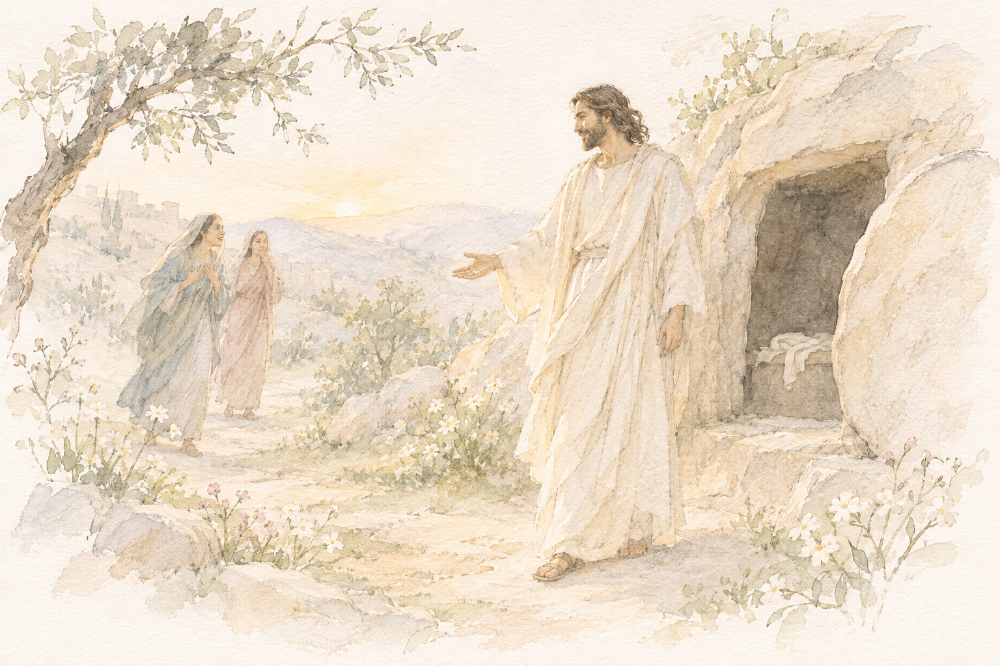
裝飾音與主題的進入。前奏曲的裝飾音與持續音，使旋律在流動中也有停留。賦格主題的輪廓鮮明，每次進入時，可聽見它與其他旋律形成不同組合。
聆聽重點：比較主題在高音與低音出現時，周圍聲部的不同配合。
第 17–20 組
和弦與對位。前奏曲的和弦性寫法與節奏，帶有較明確的宣告感。賦格則由各聲部交錯的旋律展開，與前奏曲呈現不同的音響。
聆聽重點：比較前奏曲中較整齊的和弦節奏，與賦格各聲部先後進入的寫法。
主題與其他聲部的配合。前奏曲以短小材料連接成較長的樂句。賦格中，主題出現時，其他聲部仍持續演奏，並非只作和弦伴奏。
聆聽重點：選一次清楚的主題進入，同時留意另一個聲部的旋律如何延續。
休止與主題節奏。前奏曲中，不同聲部以相似材料互相照應。賦格主題開頭的單音、休止與後續音型，構成容易辨認的節奏。
聆聽重點：記住主題起頭的停頓，聽它在其他聲部出現時，如何接入仍在進行的旋律。
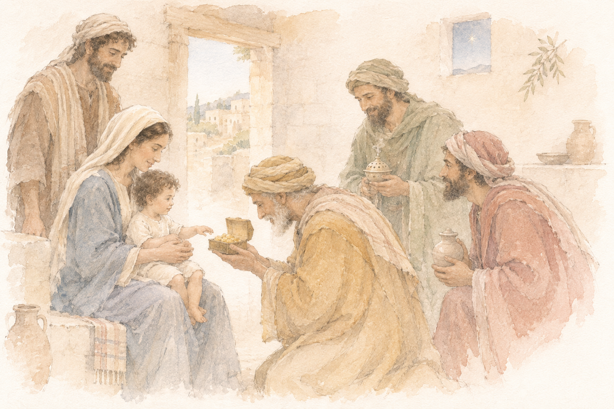
長篇賦格。前奏曲以規律的節奏與音型展開。賦格篇幅較長，主題多次進入，聲部的組合與音域也隨之改變。
聆聽重點：由主題每次出現的位置，留意當時有多少聲部同時活動，以及旋律集中在哪個音域。
第 21–24 組
快速音群與和弦段落。前奏曲交替使用快速音群與和弦性段落，帶有即興般的變化。賦格則以較連續的節奏，讓主題在各聲部間展開。
聆聽重點：比較前奏曲不同段落的音型與停頓，再聽賦格如何維持較穩定的律動。
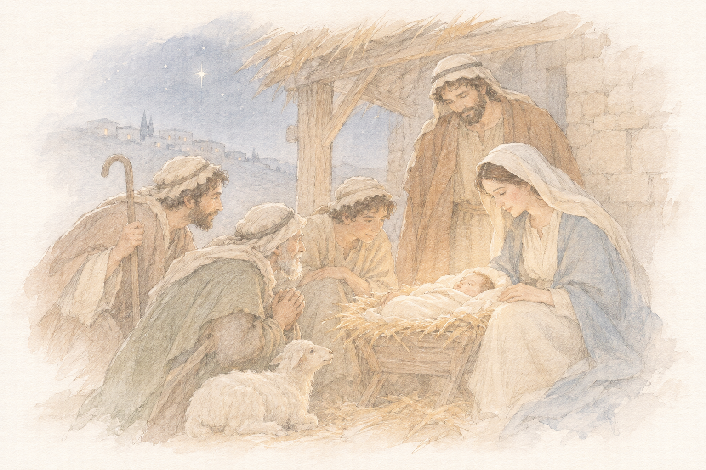
五聲部的緩慢展開。前奏曲的旋律與和聲緩慢推移。賦格為五聲部，各條旋律交疊，在較慢的速度中形成厚實的音響。
聆聽重點：先聽最高與最低聲部，再留意中間旋律的進入，以及主題彼此重疊的段落。
流暢的旋律與對位。前奏曲的線條流暢，各樂句自然接續。賦格中，主題與其他旋律同時進行，可聽見各聲部在不同音域間的配合。
聆聽重點：主題再次出現時，留意其他聲部如何延續原有的旋律。
B 小調的終曲。前奏曲中，上方旋律與低音各有清楚的線條。賦格的主題較長，包含鮮明的半音移動，並在全曲中多次回返。
聆聽重點：先熟悉賦格主題的半音進行，再聽它在不同聲部與和聲之下的變化。
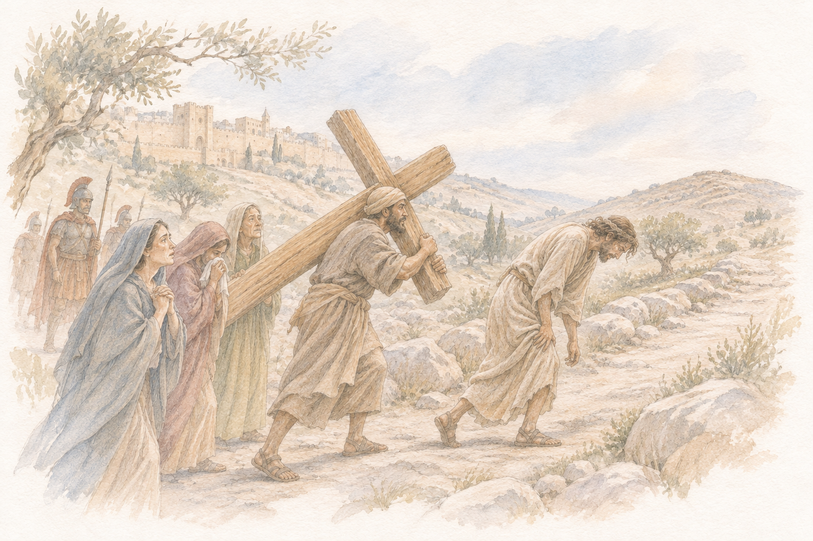
附錄：節目冊中的聖經意象與樂曲對照
以下依演出節目冊「表一」照錄，作為閱讀插畫與曲目時的參考。它不是對《平均律》逐首意義的定論；曲目與意象之間的關聯，應保留為可供聆聽與思考的線索。
| 組別 | 樂曲 | 節目冊意象 | 節目冊所列出處 |
|---|---|---|---|
| 1 | C 大調・BWV 846 | 天使報喜 | 路加福音 |
| 2 | C 小調・BWV 847 | 燃燒的荊棘 | 出埃及記 |
| 3 | 升 C 大調・BWV 848 | 三位一體 | 馬太福音 |
| 4 | 升 C 小調・BWV 849 | 客西馬尼園的禱告 | 馬太福音 |
| 5 | D 大調・BWV 850 | 聖靈降臨 | 使徒行傳 |
| 6 | D 小調・BWV 851 | 罪與救贖 | 創世記 |
| 7 | 降 E 大調・BWV 852 | 三位一體 | 教義性主題 |
| 8 | 降 E 小調／升 D 小調・BWV 853 | 卸下十字架 | 約翰福音 |
| 9 | E 大調・BWV 854 | 逃往埃及 | 馬太福音 |
| 10 | E 小調・BWV 855 | 聖母探訪 | 路加福音 |
| 11 | F 大調・BWV 856 | 捕魚的神蹟 | 路加福音 |
| 12 | F 小調・BWV 857 | 聖母悼歌 | 約翰福音 |
| 13 | 升 F 大調・BWV 858 | 新年 | 路加福音 |
| 14 | 升 F 小調・BWV 859 | 背負十字架 | 約翰福音 |
| 15 | G 大調・BWV 860 | 基督復活 | 馬太福音 |
| 16 | G 小調・BWV 861 | 聖母探訪 | 路加福音 |
| 17 | 降 A 大調・BWV 862 | 賢士朝拜 | 馬太福音 |
| 18 | 升 G 小調・BWV 863 | 十架七言 | 四福音書 |
| 19 | A 大調・BWV 864 | 賢士朝拜 | 馬太福音 |
| 20 | A 小調・BWV 865 | 約旦河受洗 | 馬太福音 |
| 21 | 降 B 大調・BWV 866 | 牧羊人朝拜 | 路加福音 |
| 22 | 降 B 小調・BWV 867 | 耶穌之死 | 馬太福音 |
| 23 | B 大調・BWV 868 | 基督復活 | 馬太福音 |
| 24 | B 小調・BWV 869 | 走向各各他 | 路加福音 |
可能出處與閱讀方式
這份二十四組對照的直接來源是巴哈靈感製作《絢麗系列——孫旻秀：巴哈〈平均律鍵盤曲集第一冊〉》音樂會節目冊「表一」（第 34–39 頁）。其中「新年」依節目冊原文保留，僅憑表格無法確定其所指節期或經文；「聖母悼歌」可從馬利亞在十字架旁的形象理解。
二十世紀理論家亞沃爾斯基（Boleslav Yavorsky）曾提出，可從新教聖詠、巴哈聲樂作品與音樂修辭的聯繫，探索《平均律》的宗教意涵。這提供一個可能的研究背景，但不表示上述每一組對照都已由亞沃爾斯基逐項提出或得到證實。
延伸閱讀：Natalya Pasichnyk「Rethinking WTC」研究計畫；Navona Records《Rethinking the Well-Tempered Clavier》。
本人錄音、影音與資料來源
以下列出演出、錄音及節目冊資料。STAGE+ 完整演出與串流專輯可能需要帳號或訂閱，實際播放依各平台規定。
- 正式節目與中場安排
- Minsoo Sohn 官方演出紀錄
- Hyperion：全本錄音與作品說明
- 唱片公司：專輯背景與發行日期
- STAGE+：首爾全本演出
- STAGE+：本人訪談（約 7 分鐘）
- Apple Music：本人全本錄音
- 巴哈靈感製作，本場音樂會節目冊「表一」第 34–39 頁：24 組前奏曲與賦格之聖經意象及出處；依讀者提供之節目冊照片整理。
- YouTube：Minsoo Sohn《平均律鍵盤曲集》第一冊專輯播放清單
逐曲 YouTube 連結為指定演奏者與作品編號的搜尋入口，並非單曲影片的直接網址。插畫為 AI 生成的水彩意象。